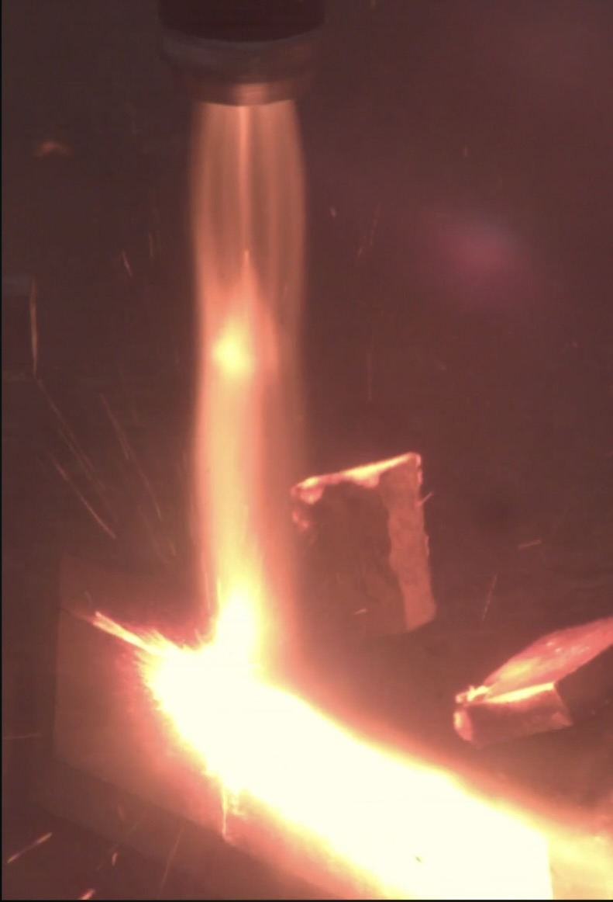
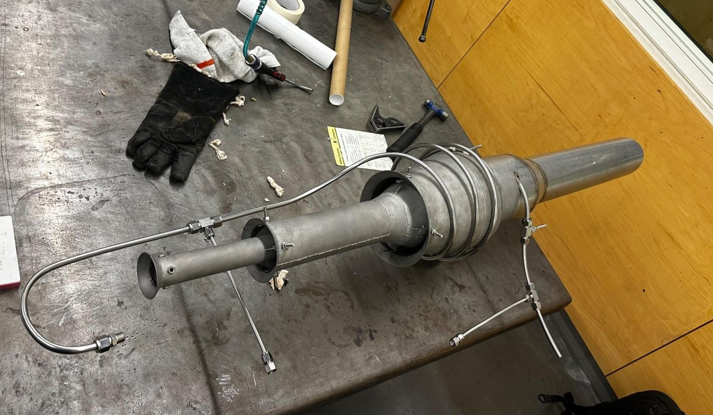
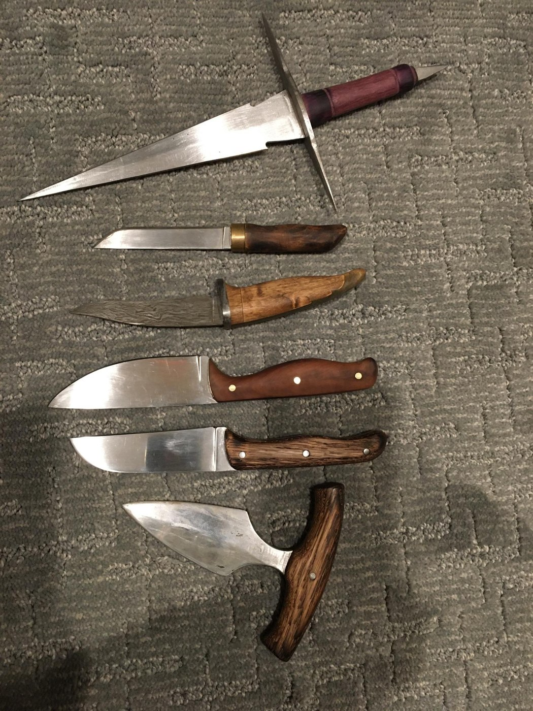

Simeon Rice
Aerospace & Mechanical Engineering · Propulsion
Mechanical engineering student at Brigham Young University, building rockets, jet engines, and the hardware around them.
Projects
Propulsion, rocketry, and shop work — from the university team to the garage.
-

June 2026 — Ongoing
BYU Propulsion Research Team
Hybrid rocket development, static fire, and fluids design for a higher-thrust engine.
-

July 2026 — Ongoing
Gluhareff Pressure Jet
A propane pressure jet built to study pyrolysis and airflow for the SIOY competition.
-

January 2026
Advanced Rocketry — Centurion
A university rocket that reached 4,133 feet, closest to the 4,000-foot target.
-

December 2025
Valveless Pulse Jet
A garage-built propane pulse jet — the project that started a serious interest in propulsion.
-

September 2023
Dry Cell Hydrogen Generator
An electrolysis system built to feed a hydrogen-oxygen torch for metalwork.
-

2020 — Present
Blacksmithing and Knives
Knives, a forge, tongs, a belt grinder, and a foot-powered hammer — made instead of bought.
-
Ongoing and planned
Other Projects
A supersonic RC aircraft, an L1 rocket, a small liquid engine, and what comes next.